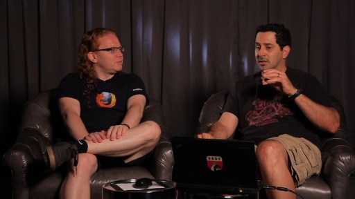

Web mavens Christian Heilmann of Mozilla and Rey Bango of Microsoft (ergo, FoxIE) share their opinions on modern web browsers and standards. This four-part series covers a broad range of topics of int…
Introducing FoxIE[WMV] [2012/07/27]Microsoft's Rey Bango and Mozilla's Christian Heilmann come together on Miami's South Beach to share their thoughts on modern browsers and offer tips on tools, techniques, and standards-based web deve…
Web Tools and Browser Testing[WMV] [2012/07/27]There are several different browsers in widespread use today and multiple versions of those browsers can create unique challenges for web developers. In this video Rey and Chris discuss how to create …
The Great Divide: Coping with Modern and Legacy Browsers[WMV] [2012/07/27]Our FoxIE web devs discuss techniques for supporting modern browsers and not leaving legacy users totally behind. They also address the risks and alternatives to common feature detection methods and b…
Implementing Modern Web Standards[WMV] [2012/07/27]Rey and Chris talk about the complexity of modern web standards and practical approaches to putting them into practice.
HTML5 and Modern Web Development[WMV] [2012/07/27]Rey and Chris discuss the exciting opportunities HTML5 provides and addressing the challenges of today's mobile and desktop devices. Also, an approach for modernizing the user experience using progres…